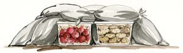

What To Do In Winter
Six top crops for winter harvests, plus how to build better soil and get ready for spring.
By Barbara Pleasant
October/November 2007
What are you growing in your garden this winter? This is not a trick question. When you work an organic food garden in ways that bring out the best in your site, your soil and your plants, winter is an interesting and useful stretch of time. In most regions, you can enjoy spinach, Brussels sprouts, sunchokes, kale, carrots, parsnips and other cold-hardy crops all through the winter.
To help you brush up on your cold-season gardening skills, let’s tick through the simplest, most sustainable ways to address the three main winter gardening tasks:
- growing cold-hardy edibles
- using compost, cover crops and mulch to radically improve soil quality
- enhancing habitats for hard-working beneficial insects and wildlife
No matter where you live, you can make use of climate-appropriate techniques to bring spinach, kale, chicories and other hardy vegetables through the winter (see Grow Great Salads Year Round, August/September 2006). You will need an attached greenhouse in Zones 2 to 4, but in Zones 5 to 7 you can get by with a tunnel covered with one layer each of row cover and plastic (the plastic comes off easily for ventilation). Support the tunnel with an arch of heavy-gauge wire fencing to make sure it can stand up to accumulated ice and snow, like a green igloo.
Protect Fall Crops
If you have carrots in the ground, take this tip from Eliot Coleman, author of Four-Season Harvest. In early winter enclose the carrots in a cold frame, and sprinkle an inch of compost over the tops of the plants. Add enough straw to fill the frame and close the top. Pull carrots as you need them, and be prepared to be amazed at their sweet flavor - what Coleman calls “carrot nirvana.” Parsnips need no protection to make it through winter, but a thick mulch (or a garbage bag stuffed with leaves) makes it easier to find them and keeps the soil from freezing. In any climate, early winter is the best time to harvest Brussels sprouts and sunchokes, both of which benefit from exposure to freezing temperatures.
Mulched soil doesn’t wash away in heavy rain, but the biggest advantage of winter mulch is that it moderates soil temperatures, slowing the speed at which the soil freezes, thaws and freezes again. Because water expands as it freezes, shallow roots are often torn and pushed upward - a natural phenomenon called heaving. Winter mulches reduce heaving around winter crops, decrease compaction from heavy rain or hail, and enrich the soil with organic matter as they decompose. They also look nice.
Fall-planted garlic, shallots and perennial onions are priority crops for a 4-inch winter mulch of hay, straw, chopped leaves or another locally abundant material. Mulch kale, too, but wait until after the first week of steady sub-freezing weather to protect the latent flower buds of strawberries with a 4-inch mulch of hay, pine needles or shredded leaves. Shroud the bases of marginally hardy herbs such as rosemary with a 12-inch-deep pyramid of mulch to protect the dormant buds closest to the ground. If you’re really pushing your luck by growing figs or other plants that cannot tolerate frozen roots, surround them with a tomato cage and stuff it full of straw or chopped leaves. Use this technique to safeguard the graft union and basal buds of modern roses, too.
Once you’ve done what you can to maximize the productivity of hardy plants, either gather up dead plants and surrounding mulch and compost them or turn the residue into the soil. This will reduce pests such as squash bugs and harlequin bugs, which overwinter as adults in plant debris, as do Mexican bean beetles and some other pests. Old mulches can harbor cabbageworm pupae, but these and other pests seldom survive winter in the wild world of a compost heap or when mixed into biologically active soil. To be on the safe side, you can create a special compost heap for plants that often harbor pests or diseases and seed-bearing weeds.
In spring, after the heap has shrunk to a manageable size, mix in a high-nitrogen material such as manure, grass clippings, alfalfa meal or cheap dry dog food (mostly corn and soybean meal) to heat the heap to 130 degrees - the temperature needed to neutralize potential troublemakers.
With this housekeeping detail behind you, think about what next year’s garden will demand of the soil. Sketch out a plan for where you will plant your favorite crops in spring and summer, and tailor your winter soil care practices to suit the needs of each plot’s future residents.
In areas to be planted with peas, potatoes, salad greens and other early spring crops, cultivate the soil, dig in some compost, and allow birds to peck through the soil to collect cutworms, tomato hornworm pupae and other insects for a week or two. Then rake the bed or row into shape and mulch it with a material that will be easy to rake off in early spring: year-old leaves or weathered hay, for example. Spring planting delays due to soggy soil will be a thing of the past.
In the space you will use in early summer for sweet corn, tomatoes and other demanding warm-weather crops, you may still have time to sow a winter cover crop such as hairy vetch, Austrian winter peas or crimson clover (see 8 Strategies for Better Garden Soil, June/July 2007). Cover crops make use of winter solar energy, energize the soil food web as their roots release carbohydrates down below and amass large amounts of organic matter. The deep roots of hardy grain cover crops such as cereal rye will spend the winter hammering their way into compacted subsoil, and nitrogen-fixing cover crops can jump-start soil improvement in new garden beds and save time in spring.
For example, if you get a good stand of hairy vetch growing in fall, simply cut the plants down in mid-spring (or pen your chickens on the bed), allow the foliage to dry into a mat and plant tomatoes right into the mulch.
For all those “to be determined” spots, you can enrich the soil and prevent winter erosion by tucking beds in with compost, mulch or a hybrid of the method I call “comforter composting.” Piles of organic matter in any configuration will turn the soil’s surface into a compost factory. Several 3-inch layers of dead plants, chopped leaves, spoiled hay and other mulch materials will compost themselves when placed atop unemployed soil.
If you would rather make a mountain of compost from autumn’s haul of yard and garden waste, why not locate the pile in a place where it will travel across cultivated soil as you turn it every few weeks? A “walking heap” leaves a trail of organic matter in its wake, and nutrients that leach from the pile at various stopping points go straight into the soil.
Protect Your Trees
Mulches, compost piles and beneficial bug-havens all have one drawback: They provide snug, diversified winter quarters for mice, voles, rabbits and other small animals. As these animals run short of food in winter, they often girdle shrubs and trees as they dine on the nutrient-rich cambium just under the bark. If dogs, cats, owls and other predators don’t keep damaging critters in check, use wire cages to protect fruit trees and other high-value woody plants.
Use wire hardware cloth, at least 24 inches wide (go wider in areas with heavy snowfall), to make trunk cages. Just before positioning a cage, lay down a 3-inch wide collar of pebbles or small stones around the base of the tree for an extra measure of deterrence. Shimmy the cage down into the soil. Place additional stones around the base of the cage to help hold it in place. Or, make ground staples for your cages from wire clothes hangers cut into 6-inch pieces and bent into a U shape.
 ELAYNE SEARS Even in winter your garden can be growing and producing cold-hardy crops. Thick mulch will build soil and protect beneficial organisms necessary for next spring’s plantings. The mulched soil itself is a perfect storage place for your fall-grown root vegetables.
|
 ELAYNE SEARS Store carrots, turnips, beets and potatoes directly in the garden in rodent-proof, ventilated containers, covered with straw or leaves stuffed into plastic garbage bags. |
|